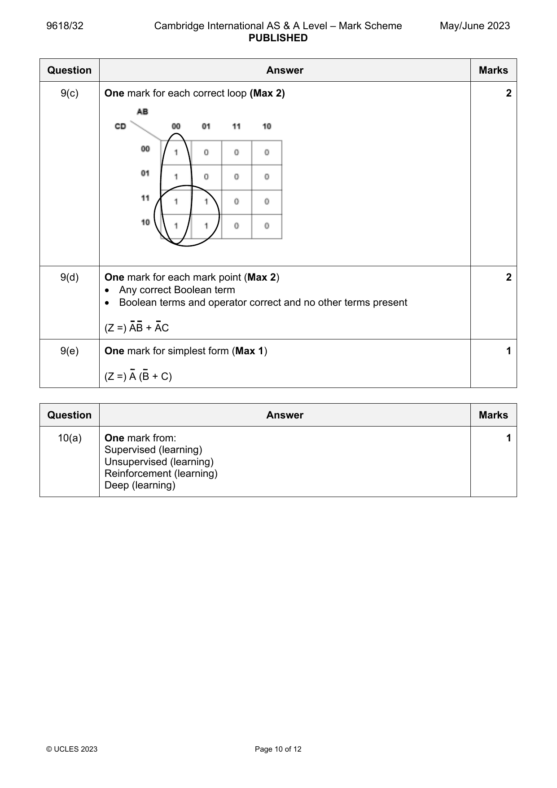
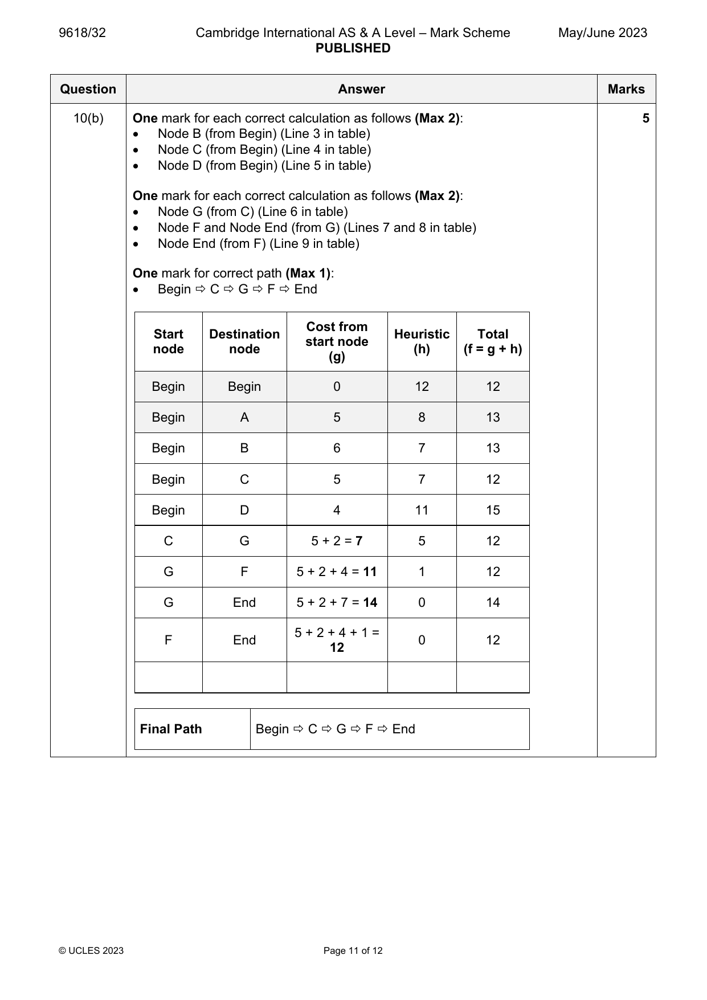
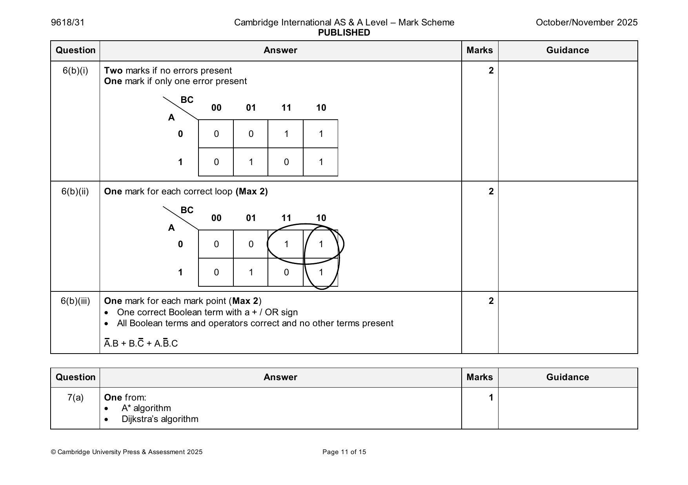
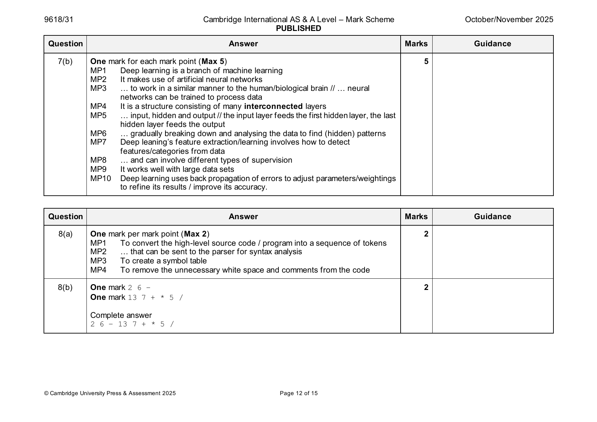
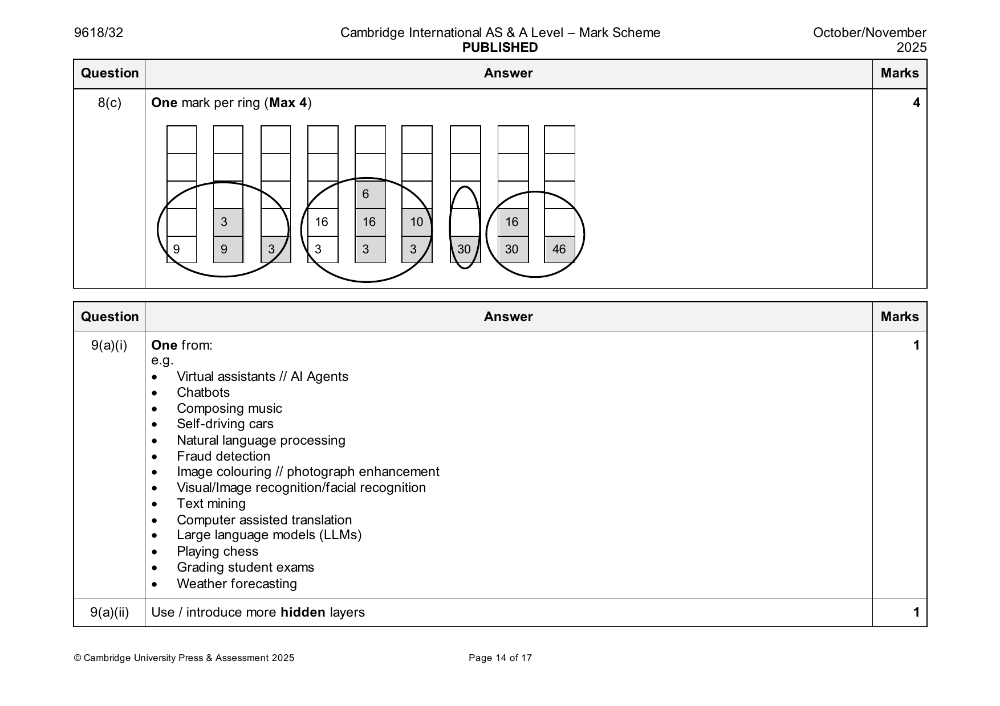

9618-2021-mj-31-q05
May/June 2021 · Paper 31 · Question 5 · 8 marks
5(a) Working (Max 3) 5
May be seen on diagram
• Initialisation: setting Base to 0
• … and the rest of the towns to ∞
• Evidence to show values at nodes being updated
• Evidence to show ‘visited node(s)’
May be seen in working section of paper
• Evidence to show calculation of at least one route
• Evidence to show more than one route has been calculated for at least
one town
Correct Answer (Max 2)
One mark for four correct values…
… One mark for all values correct
Town 1 Town 2 Town 3 Town 4 Town 5 Town 6
3 5 2 9 3 8
© UCLES 2021 Page 6 of 10
5(b) One mark for each correct marking point (Max 3) 3
• Artificial Neural Networks can be represented using graphs
• Graphs provide structures for relationships // graphs provide
relationships between nodes
• AI problems can be defined/solved as finding a path in a graph
• Graphs may be analysed/ingested by a range of algorithms
• …e.g. A* / Dijksta’s algorithm
• …used in machine learning.
• Example of method e.g. Back propagation of errors / regression
methods
Question Answer Marks
Official mark scheme pages: 6, 7 · source PDF URL
9618-2021-mj-32-q05
May/June 2021 · Paper 32 · Question 5 · 8 marks
5(a) Working (Max 3) 5
May be seen on diagram
• Initialisation: setting Base to 0
• … and the rest of the towns to ∞
• Evidence to show values at nodes being updated
• Evidence to show ‘visited node(s)’
May be seen in working section of paper
• Evidence to show calculation of at least one route
• Evidence to show more than one route has been calculated for at least
one town
Correct Answer (Max 2)
One mark for four correct values…
… One mark for all values correct
Town 1 Town 2 Town 3 Town 4 Town 5 Town 6
3 5 2 9 3 8
© UCLES 2021 Page 6 of 10
5(b) One mark for each correct marking point (Max 3) 3
• Artificial Neural Networks can be represented using graphs
• Graphs provide structures for relationships // graphs provide
relationships between nodes
• AI problems can be defined/solved as finding a path in a graph
• Graphs may be analysed/ingested by a range of algorithms
• …e.g. A* / Dijksta’s algorithm
• …used in machine learning.
• Example of method e.g. Back propagation of errors / regression
methods
Question Answer Marks
Official mark scheme pages: 6, 7 · source PDF URL
9618-2021-mj-33-q05
May/June 2021 · Paper 33 · Question 5 · 8 marks
5(a) Working (Max 3) 5
May be seen on diagram
• Initialisation: setting Base to 0
• … and the rest of the towns to ∞
• Evidence to show values at nodes being updated
• Evidence to show ‘visited node(s)’
May be seen in working section of paper
• Evidence to show calculation of at least one route
• Evidence to show more than one route has been calculated for at least
one town
Correct Answer (Max 2)
One mark for four correct values…
… One mark for all values correct
Town 1 Town 2 Town 3 Town 4 Town 5 Town 6
3 5 2 9 3 8
© UCLES 2021 Page 6 of 10
5(b) One mark for each correct marking point (Max 3) 3
• Artificial Neural Networks can be represented using graphs
• Graphs provide structures for relationships // graphs provide
relationships between nodes
• AI problems can be defined/solved as finding a path in a graph
• Graphs may be analysed/ingested by a range of algorithms
• …e.g. A* / Dijksta’s algorithm
• …used in machine learning.
• Example of method e.g. Back propagation of errors / regression
methods
Question Answer Marks
Official mark scheme pages: 6, 7 · source PDF URL
9618-2021-on-31-q09
Oct/Nov 2021 · Paper 31 · Question 9 · 10 marks
9(a)(i) One mark for correct statement (Max 1) 1
• Enables deep learning to take place
• Where the problem you are trying to solve has a higher level of
complexity it requires more layers to solve
• To enable the neural network to learn and make decisions on its own
• To improve the accuracy of the result.
9(a)(ii) One mark for each correct marking point (Max 4) 4
• Artificial neural networks are intended to replicate the way human brains
work
• Weights / values are assigned for each connection between nodes
• The data are input at the input layer and are passed into the system
• They are analysed at each subsequent (hidden) layer where
characteristics are extracted / outputs are calculated
• … this process of training / learning is repeated many times to achieve
optimum outputs // reinforcement learning takes place
• Decisions can be made without being specifically programmed
• The deep learning net will have created complex feature detectors
• The output layer provides the results
• Back propagation (of errors) will be used to correct any errors that have
been made.
© UCLES 2021 Page 8 of 10
9(b) One mark for each correct calculation as follows (Max 4) 5
• Node B (from Home) (Line 3 in table)
• Node C (from Home) (Line 4 in table)
• Node B and Node E (from A) (Lines 5 and 6 in table)
• Node F and Node School (from E) (Lines 7 and 8 in table)
• Node School (from F) (Line 9 in table)
One mark for correct path (Max 1):
• Home A E F School
Node Cost from Home Heuristic Total
Node (g) (h) (f = g + h)
1 Home 0 14 14
2 A 1 10 11
3 B 5 7 12
4 C 4 9 13
5 B 1 + 3 = 4 7 11
6 E 1 + 6 = 7 3 10
7 F 7 + 1 = 8 3 11
8 School 7 + 5 = 12 0 12
9 School 8 + 3 = 11 0 11
Final Path Home A E F School
© UCLES 2021 Page 9 of 10
Official mark scheme pages: 8, 9 · source PDF URL
9618-2021-on-32-q09
Oct/Nov 2021 · Paper 32 · Question 9 · 10 marks
9(a)(i) One mark for correct statement (Max 1) 1
• Enables deep learning to take place
• Where the problem you are trying to solve has a higher level of
complexity it requires more layers to solve
• To enable the neural network to learn and make decisions on its own
• To improve the accuracy of the result.
9(a)(ii) One mark for each correct marking point (Max 4) 4
• Artificial neural networks are intended to replicate the way human brains
work
• Weights / values are assigned for each connection between nodes
• The data are input at the input layer and are passed into the system
• They are analysed at each subsequent (hidden) layer where
characteristics are extracted / outputs are calculated
• … this process of training / learning is repeated many times to achieve
optimum outputs // reinforcement learning takes place
• Decisions can be made without being specifically programmed
• The deep learning net will have created complex feature detectors
• The output layer provides the results
• Back propagation (of errors) will be used to correct any errors that have
been made.
© UCLES 2021 Page 8 of 10
9(b) One mark for each correct calculation as follows (Max 4) 5
• Node B (from Home) (Line 3 in table)
• Node C (from Home) (Line 4 in table)
• Node B and Node E (from A) (Lines 5 and 6 in table)
• Node F and Node School (from E) (Lines 7 and 8 in table)
• Node School (from F) (Line 9 in table)
One mark for correct path (Max 1):
• Home A E F School
Node Cost from Home Heuristic Total
Node (g) (h) (f = g + h)
1 Home 0 14 14
2 A 1 10 11
3 B 5 7 12
4 C 4 9 13
5 B 1 + 3 = 4 7 11
6 E 1 + 6 = 7 3 10
7 F 7 + 1 = 8 3 11
8 School 7 + 5 = 12 0 12
9 School 8 + 3 = 11 0 11
Final Path Home A E F School
© UCLES 2021 Page 9 of 10
Official mark scheme pages: 8, 9 · source PDF URL
9618-2022-on-31-q09
Oct/Nov 2022 · Paper 31 · Question 9 · 4 marks
9(a) One mark for each correct point (Max 2) 2
• Uses artificial neural network(s)
• … that contain(s) a high number of hidden layers
• … modelled on the human brain.
• Deep learning uses many layers to progressively extract higher level features from the (raw) input.
• Deep learning is a specialised form of machine learning.
9(b) One mark for each correct point (Max 2) 2
• Deep learning makes good use of unstructured data.
• Deep learning outperforms other methods if the data size is large.
• Deep learning systems enable machines to process data with a nonlinear approach.
• Deep learning is effective at identifying (hidden) patterns / patterns that humans might not be able to see / patterns that
are too complex / time consuming for humans to carry out.
• It can provide a more accurate outcome with higher numbers of hidden layers.
Question Answer Marks
Official mark scheme pages: 11 · source PDF URL
9618-2022-on-32-q07
Oct/Nov 2022 · Paper 32 · Question 7 · 4 marks
7 One mark for each point 4
Supervised learning (Max 3 of 4)
• Supervised learning allows data to be collected, or a data output produced, from the previous experience.
• In supervised learning, known input and associated outputs are given // uses sample data with known outputs (in
training) // uses labelled input data.
• Able to predict future outcomes based on past data.
Unsupervised learning (Max 3 of 4)
• Unsupervised machine learning helps all kinds of unknown patterns in data to be found.
• Unsupervised learning only requires input data to be given.
• Uses any data // not trained on the right output // uses unlabelled input data.
© UCLES 2022 Page 9 of 16
Official mark scheme pages: 9 · source PDF URL
9618-2022-on-33-q09
Oct/Nov 2022 · Paper 33 · Question 9 · 4 marks
9(a) One mark for each correct point (Max 2) 2
• Uses artificial neural network(s)
• … that contain(s) a high number of hidden layers
• … modelled on the human brain.
• Deep learning uses many layers to progressively extract higher level features from the (raw) input.
• Deep learning is a specialised form of machine learning.
9(b) One mark for each correct point (Max 2) 2
• Deep learning makes good use of unstructured data.
• Deep learning outperforms other methods if the data size is large.
• Deep learning systems enable machines to process data with a nonlinear approach.
• Deep learning is effective at identifying (hidden) patterns / patterns that humans might not be able to see / patterns that
are too complex / time consuming for humans to carry out.
• It can provide a more accurate outcome with higher numbers of hidden layers.
Question Answer Marks
Official mark scheme pages: 11 · source PDF URL
9618-2023-mj-31-q02
May/June 2023 · Paper 31 · Question 2 · 6 marks
2(a) One mark for each correct line connecting a machine learning technique to its 4
most appropriate description (Max 4).
Machine learning category Description
simulates the data processing
capabilities of the human brain to
make decisions
Supervised
learning
enables learning by mapping an input
to an output based on example input-
Reinforcement output pairs
learning
enables information related to errors
produced by the neural network to be
transmitted
Deep learning
enables learning in an interactive
environment by trial and error using
its own experiences
Unsupervised
learning
enables learning by allowing the
process to discover patterns on its
own that were previously undetected
© UCLES 2023 Page 3 of 10
2(b) One mark per mark point (Max 2) 2
to find the optimal / shortest / most cost-effective route
… between two nodes in a
… based on distance / cost / time.
Question Answer Marks
Official mark scheme pages: 3, 4 · source PDF URL
9618-2023-mj-32-q10
May/June 2023 · Paper 32 · Question 10 · 6 marks


10(a) One mark from: 1
Supervised (learning)
Unsupervised (learning)
Reinforcement (learning)
Deep (learning)
© UCLES 2023 Page 10 of 12
10(b) One mark for each correct calculation as follows (Max 2): 5
Node B (from Begin) (Line 3 in table)
Node C (from Begin) (Line 4 in table)
Node D (from Begin) (Line 5 in table)
One mark for each correct calculation as follows (Max 2):
Node G (from C) (Line 6 in table)
Node F and Node End (from G) (Lines 7 and 8 in table)
Node End (from F) (Line 9 in table)
One mark for correct path (Max 1):
Begin C G F End
Cost from
Start Destination Heuristic Total
start node
node node (h) (f = g + h)
(g)
Begin Begin 0 12 12
Begin A 5 8 13
Begin B 6 7 13
Begin C 5 7 12
Begin D 4 11 15
C G 5 + 2 = 7 5 12
G F 5 + 2 + 4 = 11 1 12
G End 5 + 2 + 7 = 14 0 14
5 + 2 + 4 + 1 =
F End 0 12
12
Final Path Begin C G F End
© UCLES 2023 Page 11 of 12
Official mark scheme pages: 10, 11 · source PDF URL
9618-2023-mj-33-q02
May/June 2023 · Paper 33 · Question 2 · 6 marks
2(a) One mark for each correct line connecting a machine learning technique to its 4
most appropriate description (Max 4).
Machine learning category Description
simulates the data processing
capabilities of the human brain to
make decisions
Supervised
learning
enables learning by mapping an input
to an output based on example input-
Reinforcement output pairs
learning
enables information related to errors
produced by the neural network to be
transmitted
Deep learning
enables learning in an interactive
environment by trial and error using
its own experiences
Unsupervised
learning
enables learning by allowing the
process to discover patterns on its
own that were previously undetected
© UCLES 2023 Page 3 of 10
2(b) One mark per mark point (Max 2) 2
to find the optimal / shortest / most cost-effective route
… between two nodes in a
… based on distance / cost / time.
Question Answer Marks
Official mark scheme pages: 3, 4 · source PDF URL
9618-2023-on-31-q12
Oct/Nov 2023 · Paper 31 · Question 12 · 4 marks
12 One mark per mark point (Max 4) 4
MP1 An artificial neural network is the component of artificial intelligence
that is meant to simulate the functioning of a biological brain.
MP2 Artificial neural networks are a key component of machine learning.
MP3 They can solve problems that would prove impossible or difficult for
humans // Artificial neural networks have self-learning capabilities
that enable them to produce better results as more data becomes
available
MP4 Artificial neural networks can be layered (input, hidden and output
layers) // Artificial neural networks have many interconnected layers,
some / many of which are hidden
MP5 Weights are assigned between nodes
MP6 Weights are adjusted through training to give a more accurate result
MP7 More complex learning capabilities / more accurate results are
available with larger numbers of hidden layers
© UCLES 2023 Page 9 of 9
Official mark scheme pages: 9 · source PDF URL
9618-2023-on-32-q08
Oct/Nov 2023 · Paper 32 · Question 8 · 5 marks
8 One mark per mark point - working (Max 3) 5
May be seen on diagram or in working section
MP1 Initialisation – setting Start to 0
MP2 …and the rest of the towns to
MP3 Evidence to show values at nodes being updated
MP4 Evidence to show ‘visited node(s)’
MP5 Evidence to show a correct calculation of at least one route
MP6 Evidence to show more than one route has been calculated for at
least one town
Correct Answers (Max 2)
Two marks for all six correct values
One mark for four or five correct values.
A B C D E F
8 12 19 14 16 10
Question Answer Marks
Official mark scheme pages: 6 · source PDF URL
9618-2023-on-33-q12
Oct/Nov 2023 · Paper 33 · Question 12 · 4 marks
12 One mark per mark point (Max 4) 4
MP1 An artificial neural network is the component of artificial intelligence
that is meant to simulate the functioning of a biological brain.
MP2 Artificial neural networks are a key component of machine learning.
MP3 They can solve problems that would prove impossible or difficult for
humans // Artificial neural networks have self-learning capabilities
that enable them to produce better results as more data becomes
available
MP4 Artificial neural networks can be layered (input, hidden and output
layers) // Artificial neural networks have many interconnected layers,
some / many of which are hidden
MP5 Weights are assigned between nodes
MP6 Weights are adjusted through training to give a more accurate result
MP7 More complex learning capabilities / more accurate results are
available with larger numbers of hidden layers
© UCLES 2023 Page 9 of 9
Official mark scheme pages: 9 · source PDF URL
9618-2024-mj-31-q09
May/June 2024 · Paper 31 · Question 9 · 3 marks
9 One mark per mark point (Max 3) 3
MP1 Deep learning learns by finding hidden patterns that are undetectable to humans.
MP2 It structures algorithms in layers: input layer, hidden layers and output layer.
MP3 … to create an artificial neural network to learn and make intelligent decisions on its own.
MP4 It is trained using large quantities of unlabelled data.
MP5 Deep learning requires/uses a large number of hidden layers.
MP6 … the larger the number of layers, the higher the level of success.
© Cambridge University Press & Assessment 2024 Page 11 of 14
Official mark scheme pages: 11 · source PDF URL
9618-2024-mj-32-q11
May/June 2024 · Paper 32 · Question 11 · 3 marks
11 One mark per mark point (Max 3) 3
MP1 Reinforcement learning is a machine learning technique based on feedback / rewards / punishment.
MP2 … in which an agent learns to behave in an environment by performing the actions and seeing the results of the
actions.
MP3 … for each good action, the agent gets positive feedback / reward and each bad action receives negative feedback
/ punishment.
MP4 The agent learns automatically using feedback without any labelled data / specific instructions.
MP5 Adjust node weightings to achieve the correct outcome. // Using feedback to improve its performance at
accomplishing similar tasks.
© Cambridge University Press & Assessment 2024 Page 14 of 14
Official mark scheme pages: 14 · source PDF URL
9618-2024-mj-33-q09
May/June 2024 · Paper 33 · Question 9 · 3 marks
9 One mark per mark point (Max 3) 3
MP1 Deep learning learns by finding hidden patterns that are undetectable to humans.
MP2 It structures algorithms in layers: input layer, hidden layers and output layer.
MP3 … to create an artificial neural network to learn and make intelligent decisions on its own.
MP4 It is trained using large quantities of unlabelled data.
MP5 Deep learning requires/uses a large number of hidden layers.
MP6 … the larger the number of layers, the higher the level of success.
© Cambridge University Press & Assessment 2024 Page 11 of 14
Official mark scheme pages: 11 · source PDF URL
9618-2025-mj-31-q10
May/June 2025 · Paper 31 · Question 10 · 6 marks
10(a) One mark for each mark point (Max 2) 2
MP1 A graph is used in AI to record relationships between entities
MP2 … using vertices / nodes and edges
MP3 for example, to represent places on a map and the distances between them, in order to find the shortest route.
10(b) One mark for each mark point (Max 4) 4
MP1 Artificial neural networks are designed to work in the same way as the human brain
MP2 ANNs provide the architecture and algorithms for learning from the data
MP3 They have a large number of connected processing units / nodes
MP4 … that are arranged in layers / interconnected and work together to process data
MP5 Deep learning models learn from data by adjusting the weights/biases of the connections between neurons
MP6 They use multiple hidden layers to extract complex features and to make predictions
© Cambridge University Press & Assessment 2025 Page 13 of 15
Official mark scheme pages: 13 · source PDF URL
9618-2025-mj-32-q06
May/June 2025 · Paper 32 · Question 6 · 6 marks
6(a) One mark per point (Max 2) 2
MP1 A graph uses vertices/nodes to identify/represent entities such as
destinations, people, etc
MP2 Edges are used to connect nodes and can represent possible paths
between them // a path is the list of nodes connected by edges between two
given nodes
MP3 Nodes/edges can be labelled/weighted, and this is a weighting that
can be applied and used in the context of the application
MP4 A cycle is a list of nodes that return to the same node.
6(b) One mark per mark point (Max 4) 4
MP1 Supervised learning uses labelled data // Unsupervised learning
makes use of unlabelled data.
MP2 Labelled data means that known outcomes are applied to specific
inputs to help the AI predict outcomes.
MP3 Supervised learning requires initial human input/training //
Unsupervised learning does not require human input/training.
MP4 With unlabelled data in unsupervised learning, outcomes are not
known
MP5 … the AI has to search for hidden patterns/structures/clusters
MP6 … within the data in order to predict outcomes.
© Cambridge University Press & Assessment 2025 Page 7 of 12
Official mark scheme pages: 7 · source PDF URL
9618-2025-mj-33-q10
May/June 2025 · Paper 33 · Question 10 · 6 marks
10(a) To find the path between two points on a graph using the algorithm. 1
10(b) One mark per point (Max 2) 2
MP1 A* tries to find a better path (between two points) by using a heuristic function // A* finds the adjacent route with the
shortest path and continues this until the destination is reached
MP2 … Dijkstra’s just explores all possible routes.
MP3 The heuristic function on the A* algorithm gives priority to nodes that are supposed to be better than others / less
costly than others.
MP4 Dijkstra’s algorithm cannot work with negative values/weights //A* algorithm can work with negative
values/weights.
10(c) One mark for each mark point (Max 3) 3
MP1 Unsupervised learning uses algorithms to analyse / cluster
MP2 … unlabelled data sets
MP3 They discover hidden patterns / data groupings / clusters without the need for human intervention.
MP4 It is able to discover similarities and differences in data / information.
© Cambridge University Press & Assessment 2025 Page 13 of 16
Official mark scheme pages: 13 · source PDF URL
9618-2025-on-31-q07
Oct/Nov 2025 · Paper 31 · Question 7 · 6 marks


7(a) One from: 1
• A* algorithm
• Dijkstra’s algorithm
© Cambridge University Press & Assessment 2025 Page 11 of 15
7(b) One mark for each mark point (Max 5) 5
MP1 Deep learning is a branch of machine learning
MP2 It makes use of artificial neural networks
MP3 … to work in a similar manner to the human/biological brain // … neural
networks can be trained to process data
MP4 It is a structure consisting of many interconnected layers
MP5 … input, hidden and output // the input layer feeds the first hidden layer, the last
hidden layer feeds the output
MP6 … gradually breaking down and analysing the data to find (hidden) patterns
MP7 Deep leaning’s feature extraction/learning involves how to detect
features/categories from data
MP8 … and can involve different types of supervision
MP9 It works well with large data sets
MP10 Deep learning uses back propagation of errors to adjust parameters/weightings
to refine its results / improve its accuracy.
Question Answer Marks Guidance
Official mark scheme pages: 11, 12 · source PDF URL
9618-2025-on-32-q09
Oct/Nov 2025 · Paper 32 · Question 9 · 6 marks


9 9 3 3 3 3 30 30 46
Question Answer Marks
9(a)(i) One from: 1
e.g.
• Virtual assistants // AI Agents
• Chatbots
• Composing music
• Self-driving cars
• Natural language processing
• Fraud detection
• Image colouring // photograph enhancement
• Visual/Image recognition/facial recognition
• Text mining
• Computer assisted translation
• Large language models (LLMs)
• Playing chess
• Grading student exams
• Weather forecasting
9(a)(ii) Use / introduce more hidden layers 1
© Cambridge University Press & Assessment 2025 Page 14 of 17
9(b) One mark per mark point (Max 4) 4
MP1 Initial outputs are compared to expected outputs
MP2 … weightings are adjusted to minimise the difference between actual and expected outputs
MP3 Calculus is used to find the error gradient in the obtained outputs
MP4 … the results are fed back into the neural network
MP5 … weightings of each neuron / node are adjusted as a result of the feedback
MP6 … the process repeats until results are more accurate
Question Answer Marks
Official mark scheme pages: 14, 15 · source PDF URL
9618-2025-on-33-q08
Oct/Nov 2025 · Paper 33 · Question 8 · 5 marks
8 One mark per mark point - working (Max 3) 5
May be seen on diagram or in working section
MP1 Initialisation – setting Start to 0
MP2 … and the rest of the towns to
MP3 Evidence to show values at nodes being updated
MP4 Evidence to show ‘visited node(s)’
MP5 Evidence to show a correct calculation of at least one route
MP6 Evidence to show more than one route has been calculated for at
least one town
Correct Answers (Max 2)
Two marks for all six correct values
One mark for four or five correct values.
T V W X Y Z
6 10 13 18 21 28
Question Answer Marks Guidance
Official mark scheme pages: 12 · source PDF URL